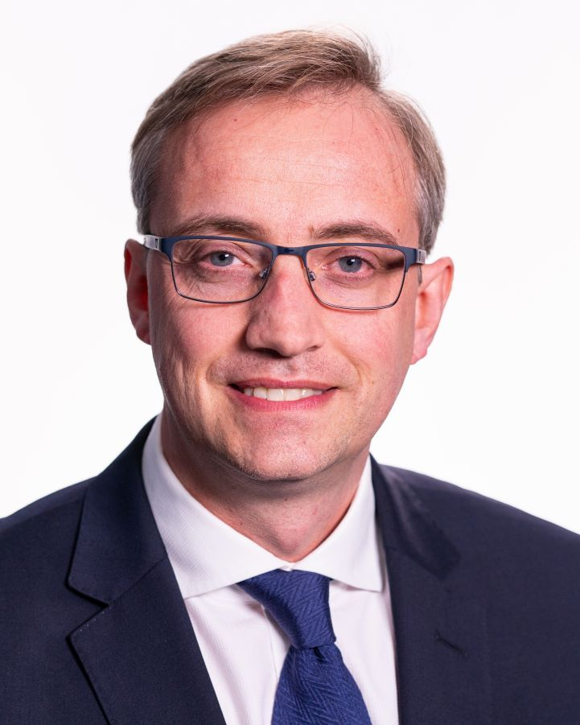
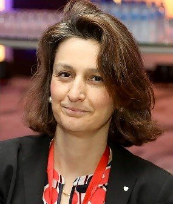
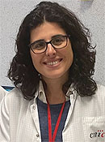
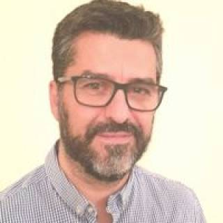

Amedeo Chiribiri
Professor of Cardiovascular Imaging · King’s College London
Professor Amedeo Chiribiri received his medical degree from the
University of Turin in 2001, completed cardiology training in
2006, and earned a PhD in Experimental Medicine and Human
Physiology in 2011. During his cardiology training, he developed
an interest in non-invasive cardiovascular imaging, including
echocardiography, cardiac computed tomography, and magnetic
resonance imaging.
He leads the Cardiac MRI Service at Guy’s and St Thomas’ NHS
Foundation Trust and is Professor of Cardiovascular Imaging at
King’s College London. He has authored or co-authored more than
300 scientific papers and several book chapters. His research
focuses on high-resolution, non-invasive quantification of
myocardial perfusion and assessment of coronary pathophysiology.

Victoria Delgado
Head of Cardiovascular Imaging · Germans Trias i Pujol
Victoria Delgado is Head of the Cardiovascular Imaging section
of the Heart Institute (iCor) at Germans Trias i Pujol University
Hospital, with a focus on multimodality imaging. She earned her
medical degree at the University of Barcelona, specialized in
cardiology at Hospital Clínic Barcelona, and completed her PhD
with cum laude at Leiden University. She worked as a senior
cardiology consultant at Leiden University Medical Center for 13
years.
She is President of the European Association of Cardiovascular
Imaging. She served as a councillor on the European Society of
Cardiology board from 2020 to 2022 and has contributed to
Society committees, including the EuroObservational Research
Programme and clinical practice guidelines. She has been Senior
Editor of Circulation and serves on the boards of
international peer-reviewed journals. She is also a Scientific
Advisory Board member of the European Cardiovascular Research
Institute and President of the Scientific Commission of the Fund
for Scientific Research (F.R.S.–FNRS).

Inés García-Lunar
Cardiologist and Group Leader · CNIC
Dr. Inés García-Lunar is a cardiologist specializing in
non-invasive cardiovascular imaging and a group leader at the
National Center for Cardiovascular Research (CNIC) in Madrid. She
leads the Cardiovascular Prevention Through Non-Invasive Imaging
group and, with Dr. Valentín Fuster, serves as clinical leader of
the scientific programme on Novel Mechanisms of Atherosclerosis.
After completing her medical and cardiology training in Spain,
she specialized in advanced cardiovascular imaging at Mount
Sinai Hospital in New York. She has more than 15 years of
experience in clinical cardiology, cardiovascular imaging, and
translational research. She heads the imaging committees of the
PESA and REACT studies. Her research uses multimodality imaging
to detect and track early subclinical atherosclerosis and
translate findings into precision cardiovascular prevention.

José Tomás Ortiz-Pérez
Consultant Cardiologist · Hospital Clínic Barcelona
José Tomás Ortiz-Pérez, MD, PhD, is a consultant cardiologist at
the Cardiovascular Institute of Hospital Clínic Barcelona and
Associate Professor of Medicine at the University of Barcelona.
Since 2008, he has worked in the hospital’s Acute Cardiovascular
Care Unit and Cardiac Imaging Unit. He earned his medical degree
at the University of Navarra, completed cardiology residency and
an interventional cardiology fellowship at Hospital Clínic, then
undertook advanced cardiovascular magnetic resonance and cardiac
computed tomography training at Northwestern University in
Chicago.
He received his PhD with highest honors from the University of
Barcelona for research on myocardial injury after acute
myocardial infarction using cardiovascular magnetic resonance.
He is Co-Director of the University of Barcelona’s Master’s
Program in Acute and Perioperative Cardiac Intensive Care and a
member of Hospital Clínic’s Amyloidosis and Multiple Myeloma
Unit. His research focuses on post-infarction ventricular
remodeling, multimodality cardiac imaging, and cardiac
amyloidosis. He has authored more than 110 peer-reviewed
publications.